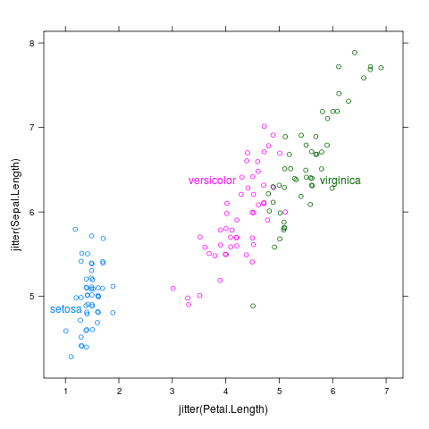
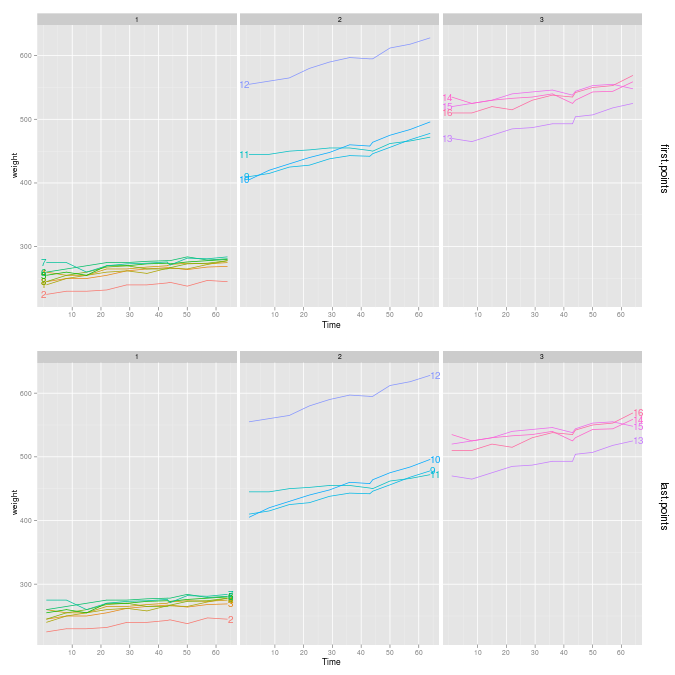

|  |
install.packages(c("ggplot2","ElemStatLearn","mlmRev")) ## dependencies
install.packages("directlabels",repos="http://r-forge.r-project.org")
library(directlabels)
direct.label(xyplot(jitter(Sepal.Length)~jitter(Petal.Length),iris,groups=Species))
|
This package is an attempt to make direct labeling a reality in everyday statistical practice by making available a body of useful functions that make direct labeling of common plots easy to do with high-level plotting systems such as lattice and ggplot2. The main function that the package provides is direct.label(p), which takes a lattice or ggplot2 plot p and adds direct labels.
directlabels website navigation:
Direct labeling a plot can be decomposed into 2 steps: calculating label positions, then drawing the labels. Drawing the labels will always be taken care of for you, using the color of the corresponding group. Calculating label positions is also done for you for common plot types. For example, with the density plot above, the default behavior is to position each label above the mode of the corresponding density estimate.
If default label positions are not satisfactory, you can always specify your own label placement method, using the method= argument to direct.label. For example, we can label longitudinal data either on the left or right of the lines:
data(BodyWeight,package="nlme") p <- qplot(Time,weight,data=BodyWeight,colour=Rat,geom="line",facets=.~Diet) direct.label(p,first.points) direct.label(p,last.points)
Here first.points and last.points are Positioning Functions of the form function(d,...){return(data.frame(x=,y=,groups=))}, where d is all the data to plot, as a data frame with columns x y groups. first.points simply returns the rows of the data frame which correspond to the first points for each group. We plot a direct label for each row returned by the Positioning Function.
The power of the directlabels system is the fact that you can write your own Positioning Functions, and they can be reused for different plots. So once you write a Positioning Function that works, adding direct labels is as simple as calling direct.label, no matter if you are using lattice or ggplot2.
semin-r, 15 oct 2009. "Visualizing multivariate data using lattice and direct labels" with R code examples.
Return to the project summary page.
| Please send email to Toby Dylan Hocking if you are using directlabels or have ideas to contribute, thanks! |
| validate |